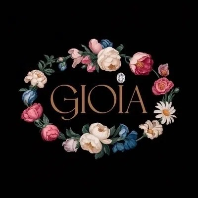
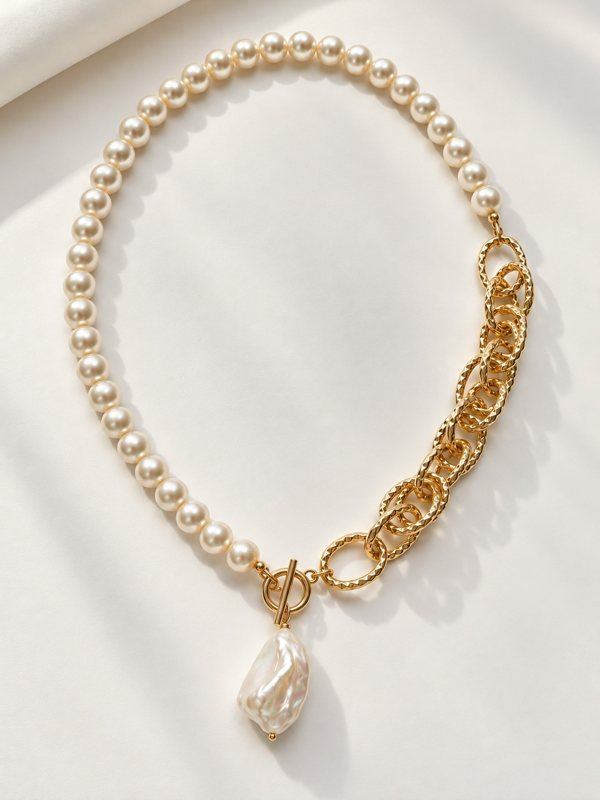
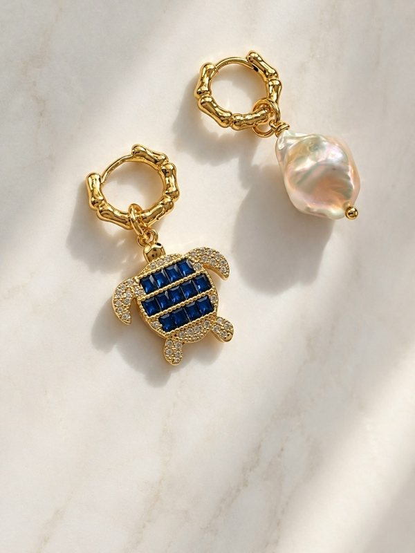
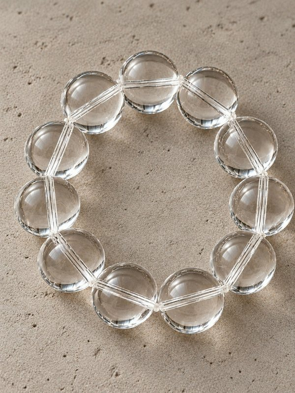
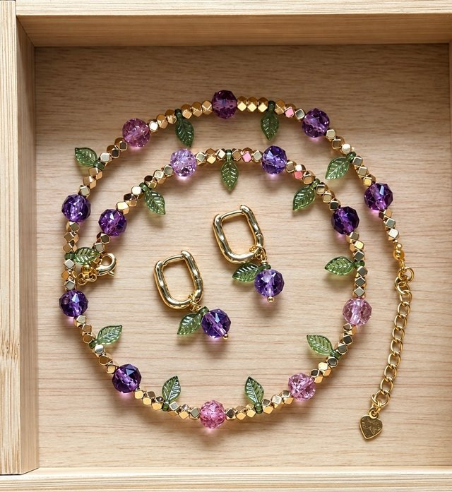

Вариант 2 · с живой 3D-обложкой
Украшение, которое живёт.
Всё из первого варианта, а в телефоне вместо статичной картинки - живая обложка с 3D-колье в цветах бренда. Нажмите кнопки: разделы тоже открываются.
- 1Палитра и шрифты взяты с gioiajewelry.ru
- 2Кнопки - Ваши 5 картинок: чётче и в едином размере
- 3Обложка из VK в новом качестве, на телефоне - живая 3D-обложка

Gioia. Украшения с характеромПодписатьсяСообщение✉
10.1K подписчиков
Gioia (Джоя) - это камерные украшения ручной работы для женщин, которые выбирают не часто, но точно.
Полезное
Товары

HoneyКолье
MareaСерьги
CristalloБраслет
IncantoКомплект